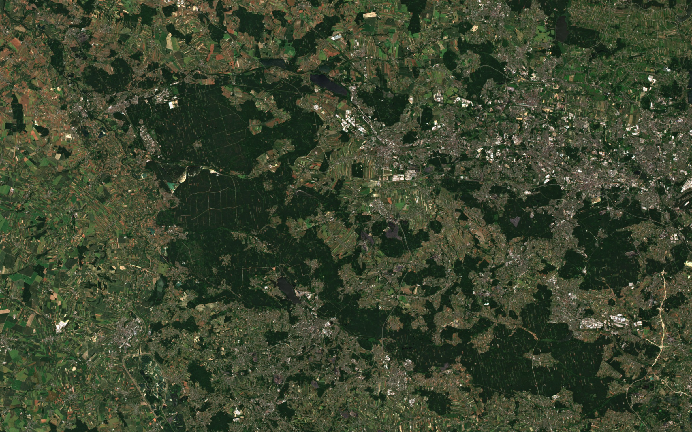
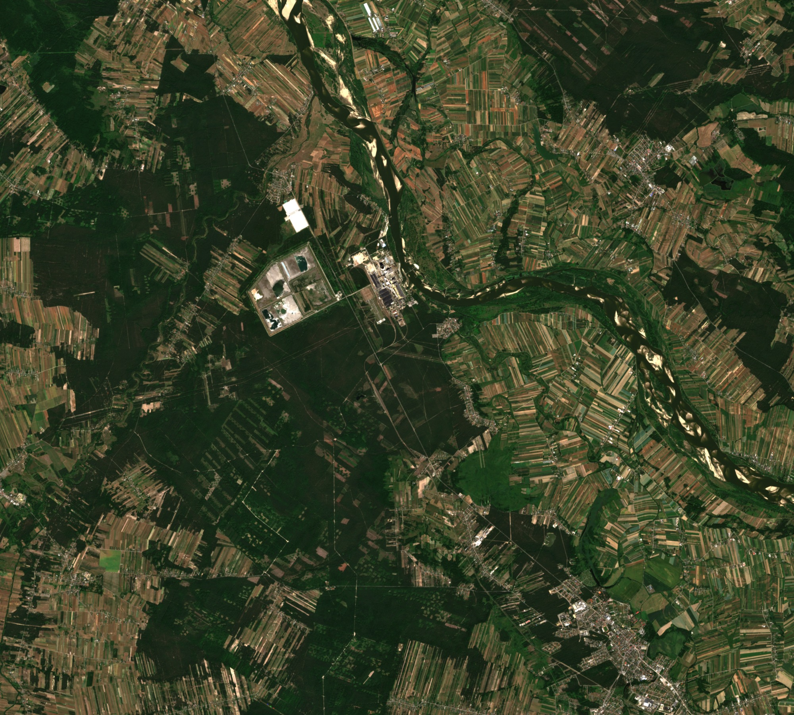
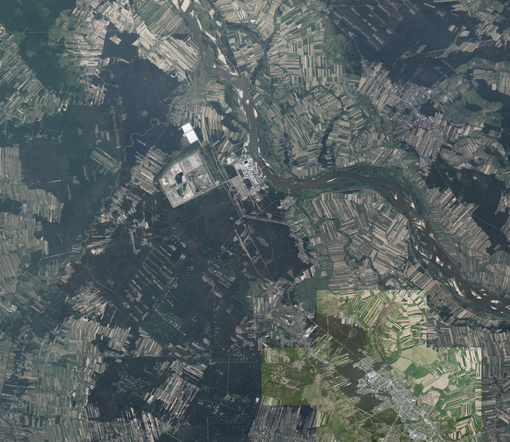

Wybór linii do analizy
Włącz „Wybierz linię” i kliknij przebieg na mapie. Odcinek zostaje wyróżniony, a panel Analiza pokazuje jego dane i zakres wyboru.
Wybór pozostaje przy zmianie filtrów i zdjęć. Możesz pobrać geometrię GeoJSON.
Wskaż linięInfraWatch / demonstrator infrastruktury
Wybierz linię lub obiekt energetyczny, przybliż jego otoczenie i porównaj zobrazowania. Zobacz, jak przygotowujemy zakres analizy infrastruktury.
Dostępne Mapa Polski, wybór obiektów i historia zdjęć.
Analizy zagrożeń pokazujemy jako osobne demonstracje.

01 / Działa w obecnej wersji
Najkrótsza ścieżka: wybierz odcinek, zobacz go z bliska, sprawdź dane.
Włącz „Wybierz linię” i kliknij przebieg na mapie. Odcinek zostaje wyróżniony, a panel Analiza pokazuje jego dane i zakres wyboru.
Wybór pozostaje przy zmianie filtrów i zdjęć. Możesz pobrać geometrię GeoJSON.
Wskaż linięOdszukaj elektrownię lub stację przez „Wybierz obiekt”. Kliknij element GIS i użyj „Pokaż cały obiekt”, aby dopasować widok do jego przebiegu.
Otwórz mapę obiektówPrzeglądaj linie, kable, podpory, stacje i urządzenia. Symbole elektrowni pozostają czytelne przy zmianie skali; szczegóły GIS pojawiają się po zbliżeniu.
Publiczny zbiór OSM. Kompletność wymaga potwierdzenia przez operatora.
Poznaj zasięg mapyWybierz typy elektrowni, napięcia i rodzaje linii. Włączaj stacje, urządzenia i podpory wtedy, gdy są potrzebne.
Na początek uproszczony widok głównej sieci i dużych elektrowni.
Sprawdź filtry mapyPorównaj Sentinel-2 i NDVI z lat 2020, 2022, 2024 i 2025. Przejdź do szczegółowych zdjęć lotniczych GUGiK.
Pokrycie Polski i granica państwa. Luki przy wybrzeżu oraz morze uzupełnia Sentinel-2; daty nalotów są niezależne.
Porównaj zobrazowaniaWskaż obszar lub otoczenie elektrowni. Sprawdź atrybuty i źródło obiektu, zapisz lokalny plan weryfikacji oraz wyeksportuj dane lub raport.
Wybór linii obejmuje jeden odcinek OSM; może to być część dłuższej linii.
Przygotuj zakres pracyProponowany przebieg prezentacji
To wybór zakresu pracy i przegląd danych. Samo wskazanie linii nie wykonuje pomiaru zagrożeń.
02 / Demonstracje metod analitycznych
Trzy działające demonstratory. Każdy ma własny zakres danych i oznaczone symulacje.

GIS i zobrazowania · PolskaPrzeglądaj rzeczywiste obrazy i NDVI. Osobno włącz scenariusz zarastania modelowego pasa linii na Śląsku.

Scenariusz · rejon KozienicPoznaj oś epok, karty obiektów i prezentację trendów przemieszczeń. Możesz też zaimportować własne dane CSV.

Model lokalny · Wisła / KozieniceObejrzyj model terenu i hipotetyczny rozwój wezbrania. Sprawdź sposób prezentacji infrastruktury w zasięgu scenariusza.
03 / Kolejne etapy
Kierunki rozwoju. Poniższe możliwości nie są jeszcze gotowymi funkcjami obecnej wersji.
Dane wysokościowe LiDAR lub fotogrametria, model przewodów i kryteria operatora jako podstawa pomiaru dla rzeczywistej linii.
Warunek: odpowiednie dane i walidacja terenowa.Wyznaczanie przemieszczeń z danych radarowych i kontrola jakości wyników, poza obecną prezentacją szeregu i importem CSV.
Warunek: przetwarzanie scen i weryfikacja geometrii pomiaru.Rozszerzenie poza lokalny demonstrator o dane i model dopasowane do wybranego obszaru infrastruktury.
Warunek: model hydrauliczny, dane lokalne i kalibracja.Mapa energetyczna jest dostępna. Pozostałe moduły pozostają planowane.